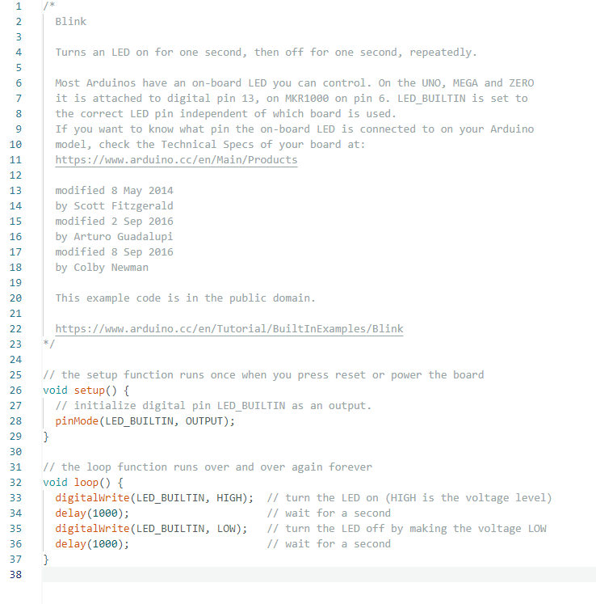
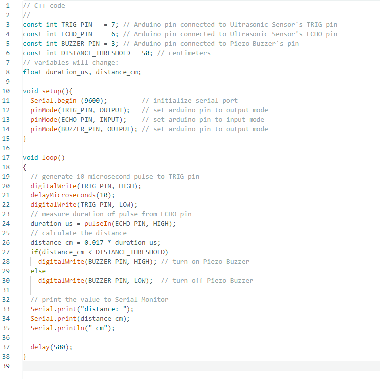

LED Blink (on Arduino)

This is a code example within the Arduino libraries, which, when executed, enables the built-in LED on the Arduino board to blink periodically.
Demo
LED Blink (LED components)

By modifying the code, defining the LED component to be connected to the Arduino pin allows the LED on the breadboard to blink. Modifying the value inside the 'delay' function also adjusts the speed of the LED flashing.
Demo
Fast blink
Ultrasonic Buzzer
